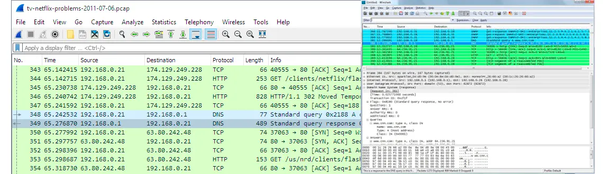

Wireshark é um analisador de protocolos utilizado para monitorar o tráfego de rede. Esse software captura pacotes de dados transmitidos em uma rede local, permitindo assim que administradores de rede analisem e resolvam problemas de comunicação ou identifiquem possíveis ameaças à segurança.
Também conhecido como sniffers, esses analisadores de protocolo conseguem capturar a maioria dos pacotes de dados utilizados em uma rede, além de fornecer vários recursos para filtragem e para visualização dos dados capturados.
Como capturar e analisar dados de outros usuários sempre é uma tarefa sensível, o uso desse tipo de ferramentas deve ser amparado por regras de governança e autorizações explícitas de todos os usuários envolvidos.
O Wireshark é compatível com a maioria dos sistemas operacionais, incluindo o Windows, macOS, Linux e outros sistemas baseados em Unix.
QUAIS SÃO SUAS PRINCIPAIS APLICAÇÕES?
Solução de problemas de rede: O Wireshark ajuda na identificação e resolução de problemas de comunicação, congestionamento e latência, permitindo que os administradores de rede analisem o tráfego em tempo real e identifiquem a origem dos problemas.
Análise de desempenho: O software pode ser usado para monitorar o desempenho da rede, medir a utilização da largura de banda e identificar gargalos.
Ele pode ajudar a otimizar o desempenho de uma rede local, mostrando ajustes de configurações necessários como a criação de novas rotas ou a substituição de componentes.
Segurança de rede: O Wireshark pode ajudar a identificar atividades suspeitas ou maliciosas, como tentativas de intrusão, ataques DDoS, varreduras de porta e outros comportamentos anômalos.
O sistema também é usado para investigar incidentes de segurança e fornecer informações detalhadas sobre eventos e atividades específicas.
Desenvolvimento e teste de software: Desenvolvedores podem usar o software para verificar a implementação correta de protocolos de rede em suas aplicações.
Além disso, o Wireshark permite analisar a comunicação entre os componentes como servidores, storages, switches, roteadores e identificar possíveis falhas de segurança e desempenho.
Análise forense de rede: O Wireshark pode ser utilizado para coletar e analisar evidências de atividades suspeitas durante investigações de incidentes de segurança.
Ele ajuda a entender o alcance de um ataque, identificar os invasores e fornecer informações para a recuperação e prevenção de futuros incidentes.
Aprendizado e treinamento: O Wireshark é uma excelente ferramenta para entender como os protocolos de rede funcionam e como os dados são transportados entre servidores, componentes de rede e endpoints.
O software é frequentemente utilizado em programas de treinamento e certificação para profissionais de TI, como administradores de rede, engenheiros e especialistas em segurança.
Auditoria e conformidade: O Wireshark também pode ser utilizado para auditar redes e verificar se as políticas de segurança, como o uso de criptografia, de autenticação e outras políticas de controle de acesso estão sendo seguidas.

Quais são os dispositivos que o Wireshark pode monitorar?
O Wireshark pode monitorar uma ampla variedade de dispositivos de rede e tráfego. Ele é capaz de capturar e analisar pacotes de dados em tempo real em redes ethernet, Wi-Fi, bluetooth e muitos outros tipos de redes.
Porém, a capacidade de monitorar um dispositivo específico bem como seu tráfego de rede também está associada as configurações da rede, permissões e limitações de hardware e software.
Assim, caso o interesse seja capturar tráfego em redes sem fio (Wi-Fi), pode ser que seja necessário algum hardware especial ou drivers compatíveis com a exigência do monitoramento.
Esses são alguns dispositivos de rede que podem ser monitorados:
- Computadores: Servidores, computadores, notebooks e outros dispositivos de computação podem ser monitorados pelo Wireshark para analisar o tráfego de entrada e saída de dados.
- Switches e roteadores: Ao configurar o espelhamento de porta (port mirroring) em um switch ou roteador, o software pode capturar e analisar todo o tráfego que passa por esses dispositivos.
- Dispositivos IoT (Internet das Coisas): O Wireshark pode ser usado para monitorar e analisar o tráfego de dispositivos IoT como câmeras de segurança, sistemas de automação residencial e até dispositivos vestíveis.
- Acess points e dispositivos Wi-Fi: O aplicativo pode monitorar o tráfego entre os dispositivos conectados à rede sem fio, access points e controladores de rede sem fio.
- Unidades de armazenamento em rede (NAS): O software pode monitorar o tráfego de storages NAS e outras unidades de armazenamento para analisar o desempenho e a segurança das transferências de arquivos.
- Dispositivos móveis: Smartphones e tablets compatíveis com Android e iOS podem ser monitorados quando conectados à mesma rede que o computador que está executando o Wireshark.
- Dispositivos VoIP: O analisador de pacotes Wireshark pode ser ainda monitorar e analisar o tráfego da maioria dos dispositivos e sistemas de telefonia baseados em VoIP (Voice over IP).